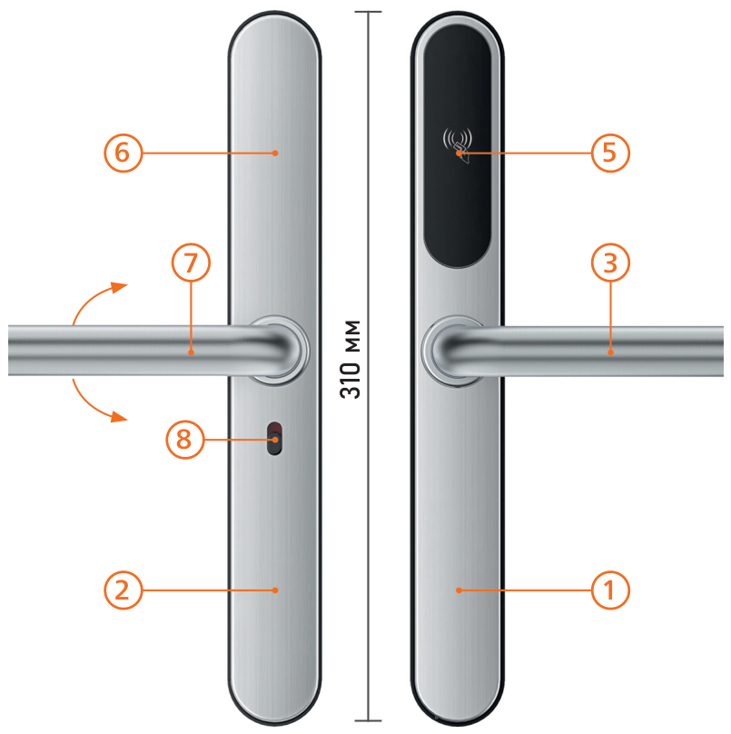
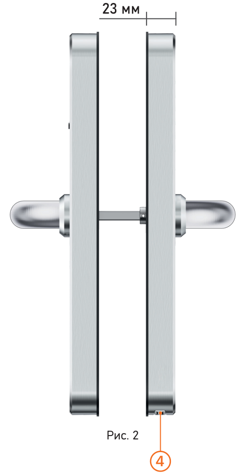

Описание
Руководство пользователя · Электронные замки Novilock™ Classic Slim


- Передняя панель
- Задняя панель
- Ручка
- Цилиндр механического аварийного ключа
- Считыватель RF карт
- Батарейный отсек
- Управление ригелем (Ручка)
- Переключатель блокировки двери
Обратите внимание
- Механические ключи храните в доступном месте
- Заменяйте источники питания при достижении низкой мощности сигнализации.
- Внимательно изучите данное Руководство перед установ кой и сохраните его для дальнейшего использования.
Электронный замок для отелей Classic Slim производства компании Novilock™ создан чтобы обеспечить вашему объекту наивысший уровень безопасности и одновременно с этим – более комфортное и удобное открывание вашей двери. Для доступа на объект вы можете выбрать один из нескольких способов открывания:
- RFID карта, которую достаточно просто приложить к замку;
- обычный ключ, в случае если все другие способы открытия для вас недоступны. Обычно используется для аварийног открытия двери.
Современный дизайн устройства идеально подойдет для дверей любого стиля на любом объекте – вашей квартире, офисе, складе, апарт – отеле или помещений с повышенным уровнем контролем.
- Напряжение питания
- Используйте только рекомендованное напряжение питания.
- Перед включением оборудования убедитесь в том, что соединительные провода (разъемы) подключены с соблюдением полярности. Неверное соединение может привести к повреждению и/или неправильному функционированию оборудования.
- Условия эксплуатации
- Строго соблюдайте установленный для данного устройства температурный режим.
- Не устанавливайте устройство:
- в зонах с влажностью и уровнем згрязнения воздуха более 95%;
- в области повышенного испарения и парообразования или усиленной вибрации;
- Храните механические ключи от зам ка в доступном месте.
- Предотвращайте механические по вреждения камеры.
Обратите внимание
Несобдюдение условий хранения и эксплуатации увмер мо гут привести к повреждению оборудования.
| Передняя панель | 1 шт. |
| Задняя панель | 1 шт. |
| Врезная часть | 1 шт. |
| Скользящий винт М5×11 мм | 2 шт. |
| Врезной винт М5×10 мм | 4 шт. |
| Врезной винт М4×25 мм | 4 шт. |
| Стяжка М5×30 мм | 2 шт. |
| Стяжка М5×35 мм | 2 шт. |
| Винт М5×30 мм | 2 шт. |
| Винт М5×40 мм | 2 шт. |
| Квадрат 7.8×50 мм | 1 шт. |
| Квадрат 7.8×57 мм | 1 шт. |
| Квадрат 7.8×67 мм | 1 шт. |
| Механический ключ | 2 шт. |
| Технический паспорт изделия | 1 шт. |